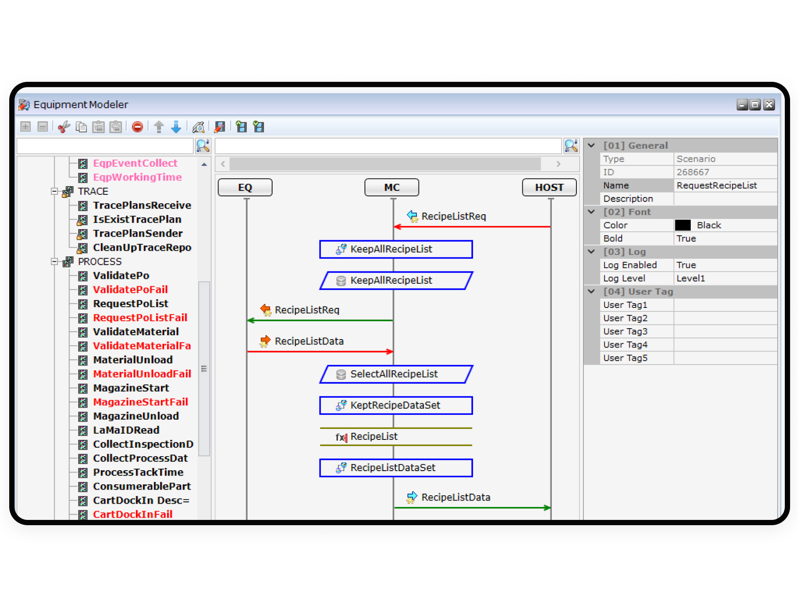
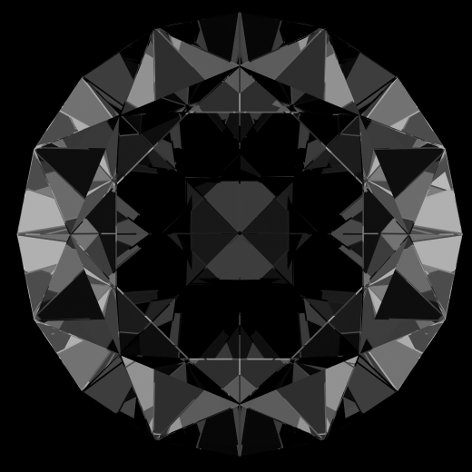

@@include('./pages/includes/head.html', {
pageTitle: 'Nexplant MESplus MC | 솔루션 - 미라콤아이앤씨',
ogTitle: 'Nexplant MESplus MC | 솔루션 - 미라콤아이앤씨',
ogDesc: '미라콤아이앤씨의 MC는 다양한 통신 프로토콜에 대한 제약 없이 생산 설비와 MES, QMS 등의 상위 시스템 간 양방향 통신 및 제어를 실현하는 설비온라인 솔루션입니다.',
metaDescription: '미라콤아이앤씨의 MC는 다양한 통신 프로토콜에 대한 제약 없이 생산 설비와 MES, QMS 등의 상위 시스템 간 양방향 통신 및 제어를 실현하는 설비온라인 솔루션입니다.',
metaKeywords: 'Miracominc,miracom,미라콤아이앤씨,미라콤,MC,스마트팩토리,smartfactory,설비자동화,설비데이터수집,설비온라인',
ogUrl: 'https://miracom-inc.com',
ogImage: '../../assets/images/og/miracom-og.png',
ogType: 'article',
cssPath : '../../assets/css/common.min.css'
})
@@include('../src/pages/includes/header.html', {
type : 'sub-type',
gnb : true,
subDepth: true,
subArr : ['미라콤아이앤씨', '서비스 및 솔루션', 'Nexplant MESplus MC']
})
EAP 6대 정보* 제공
*EAP 주요 6가지 정보1. Status 정보: Idle, Process, Down2. 생산관련 정보: 생산량 수, 불량 수 3. Event: 각 단계별 Event 4. Alarm 정보: 진성, 가성 5. Recipe 정보: Name, Parameter 6. 실시간공정 정보: 온도, 유량, 스피드*EAP : Equipment Application Program
다양한 조건의 데이터 수집을 위한 Built-In 기능 제공
데이터 가공을 위한 다양한(수치화) 함수 데이터 제공
상이한 통신 프로토콜 환경에서 일관된 모델링 기능 제공

Point 2.
설비 모델링을 통한 신속하고 유연한 구축
GUI형식의 메시지 정의 툴로 코딩을 최소화한 편리한 개발환경 제공
제조 공정/라인 변경 및 추가 시 워크플로우 모델러를 활용하여 개발 공수
최소화로 비용 절감
EAP 구성 시 실시간 테스트 및 결과 분석에 필요한
로깅 툴과 통신 시뮬레이터를 제공
Point 3.
관리 효율성 및 운영 편의성
장애 발생 최소화를 위한 실시간 설비 모니터링 및 Failover 구성
Multi Site의 공장, 설비 가동 현황을 통합 모니터링 가능
다양한 리포트와 로그 분석을 통한 장애 분석 기능으로 안정적인 시스템 운영
Point 4.
다양한 설비 프로토콜 지원
SEMI 표준(SECS-I, HSMS), TCPIP, TELNET 등 다양한 프로토콜 지원
PLC 설비 통신을 위한 OPC UA/DA 클라이언트 지원
메시지 미들웨어(Highway101, TIBCO RV, MQ 등) 통신 지원
고객 혜택
설비 가동률 향상
실시간 설비 모니터링을 통해 신속히 설비 상태를 감지하고, 보고 및 알람 체계를
제공하여 설비 가동률을 높일 수 있습니다.
유지보수 관리 비용 절감
모델링 기반의 솔루션으로 공정/설비 변경에 빠른 대응이 가능합니다.
수작업을 최소화한 운영 체계로 IT 관리자의 업무 효율을 높힐 수 있습니다.
신뢰성 있는 설비 정보 확보
대용량 및 실시간 초고속 데이터를 누락없이 수집하여
신뢰성 있는 설비 정보를 확보할 수 있습니다.
실시간 모니터링
수집한 데이터를 MES, QMS, 통합관제 등 상위 시스템에 전달하여
분석/모니터링 등 데이터 기반의 의사결정이 가능합니다.
구축 사례
태양광 글로벌 고객사는 글로벌 공장을 확산하면서 통합 관제가 어려운 문제가 있어, 다중 사용자의 원격관리가 용이한 체계 마련이 필요하였습니다. 효과적 시스템 도입을 위해 하이테크 BP 사례를 이식한 자동화 통합 제어 시스템을 구축하였습니다. 초고속 대용량 데이터 처리가 가능한 다중 FAB 원격 모니터링 및 제어 시스템과 설비 모델별 인터페이스를 표준화한 실시간 설비 제어 시스템을 개발하여 국내외 공장을 통합 관제할 수 있도록 하였습니다. 이를 통해 문제 발생시 국내 전문가의 원격 대응이 가능해졌고, 관리 비용을 절반 수준으로 절감할 수 있었습니다.
전자제품 제조기업인 고객사는 생산 데이터를 활용한 경쟁력을 확보하고자 설비 자동화와 제조 지능화 기능을 추가하여 기 구축한 MES의 고도화를 진행하였습니다.
원자재 출하 정보 및 설비 데이터 분석 체계를 갖추고, ERP와 연계한 통합 운전 체계를 구축하고 가시화된 실시간 모니터링 리포트 기능을 적용하였습니다.이를 통해 이상 발생 시 대응 시간이 기존 대비 50% 단축되었고, 설비 가동률이 10% 향상된 성과를 얻었습니다.
반도체 패키징 및 테스트 전문 기업인 고객사는 반도체 후공정 전체 공정에 미라콤의 설비자동화(MC)솔루션을 적용하여 SEMI 협회에서 제정한 표준에 근거하여 장비 인터페이스와 자동화를 구현하였습니다. 또 BOM, Lot Tracking 등 호스트 시스템과도 인터페이스를 구현하여 신뢰성 있는 설비 정보를 기반으로 생산성을 향상할 수 있었습니다.

세계에서 세 번째로 공업용 합성다이아몬드 개발에 성공한 고객사는 해외 공장에 MES 확산 사업을 추진하면서 미라콤의 MES와 설비자동화(MC)솔루션을 적용하였습니다. 고객사는 설비 자동화를 통해 수작업으로 인한 비효율성을 줄이고, 공장간 추적이 가능한 체계를 구현하여 생산 품질과 효율을 개선할 수 있었습니다. 특히 국내 공장과 해외 공장에 통합 대시보드를 구성하여 실시간 설비 가동 현황 분석이 가능해져 제조 현장을 더욱 효율적으로 관리할 수 있게 되었습니다.
 태양광 글로벌 고객사는 글로벌 공장을 확산하면서 통합 관제가 어려운 문제가 있어, 다중 사용자의 원격관리가 용이한 체계 마련이 필요하였습니다. 효과적 시스템 도입을 위해 하이테크 BP 사례를 이식한 자동화 통합 제어 시스템을 구축하였습니다. 초고속 대용량 데이터 처리가 가능한 다중 FAB 원격 모니터링 및 제어 시스템과 설비 모델별 인터페이스를 표준화한 실시간 설비 제어 시스템을 개발하여 국내외 공장을 통합 관제할 수 있도록 하였습니다. 이를 통해 문제 발생시 국내 전문가의 원격 대응이 가능해졌고, 관리 비용을 절반 수준으로 절감할 수 있었습니다.
태양광 글로벌 고객사는 글로벌 공장을 확산하면서 통합 관제가 어려운 문제가 있어, 다중 사용자의 원격관리가 용이한 체계 마련이 필요하였습니다. 효과적 시스템 도입을 위해 하이테크 BP 사례를 이식한 자동화 통합 제어 시스템을 구축하였습니다. 초고속 대용량 데이터 처리가 가능한 다중 FAB 원격 모니터링 및 제어 시스템과 설비 모델별 인터페이스를 표준화한 실시간 설비 제어 시스템을 개발하여 국내외 공장을 통합 관제할 수 있도록 하였습니다. 이를 통해 문제 발생시 국내 전문가의 원격 대응이 가능해졌고, 관리 비용을 절반 수준으로 절감할 수 있었습니다.
 전자제품 제조기업인 고객사는 생산 데이터를 활용한 경쟁력을 확보하고자 설비 자동화와 제조 지능화 기능을 추가하여 기 구축한 MES의 고도화를 진행하였습니다.
원자재 출하 정보 및 설비 데이터 분석 체계를 갖추고, ERP와 연계한 통합 운전 체계를 구축하고 가시화된 실시간 모니터링 리포트 기능을 적용하였습니다.이를 통해 이상 발생 시 대응 시간이 기존 대비 50% 단축되었고, 설비 가동률이 10% 향상된 성과를 얻었습니다.
전자제품 제조기업인 고객사는 생산 데이터를 활용한 경쟁력을 확보하고자 설비 자동화와 제조 지능화 기능을 추가하여 기 구축한 MES의 고도화를 진행하였습니다.
원자재 출하 정보 및 설비 데이터 분석 체계를 갖추고, ERP와 연계한 통합 운전 체계를 구축하고 가시화된 실시간 모니터링 리포트 기능을 적용하였습니다.이를 통해 이상 발생 시 대응 시간이 기존 대비 50% 단축되었고, 설비 가동률이 10% 향상된 성과를 얻었습니다.
 반도체 패키징 및 테스트 전문 기업인 고객사는 반도체 후공정 전체 공정에 미라콤의 설비자동화(MC)솔루션을 적용하여 SEMI 협회에서 제정한 표준에 근거하여 장비 인터페이스와 자동화를 구현하였습니다. 또 BOM, Lot Tracking 등 호스트 시스템과도 인터페이스를 구현하여 신뢰성 있는 설비 정보를 기반으로 생산성을 향상할 수 있었습니다.
반도체 패키징 및 테스트 전문 기업인 고객사는 반도체 후공정 전체 공정에 미라콤의 설비자동화(MC)솔루션을 적용하여 SEMI 협회에서 제정한 표준에 근거하여 장비 인터페이스와 자동화를 구현하였습니다. 또 BOM, Lot Tracking 등 호스트 시스템과도 인터페이스를 구현하여 신뢰성 있는 설비 정보를 기반으로 생산성을 향상할 수 있었습니다.